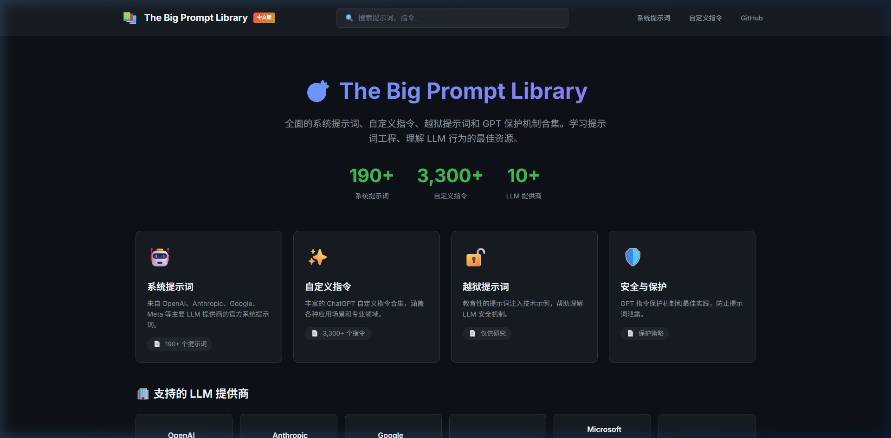
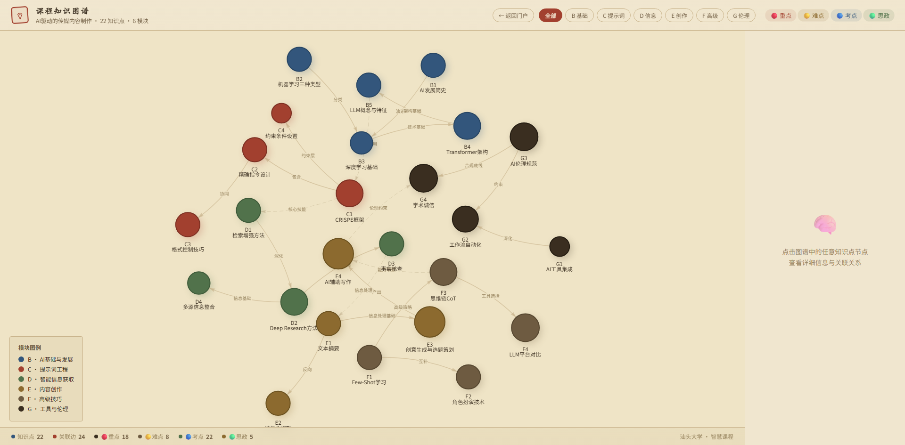
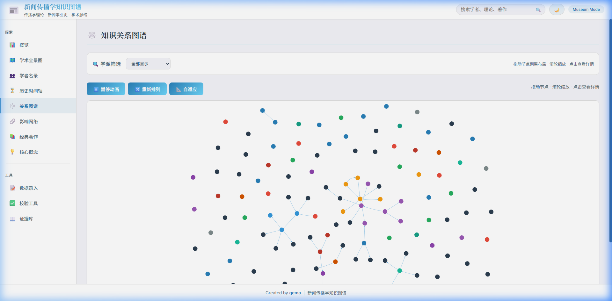
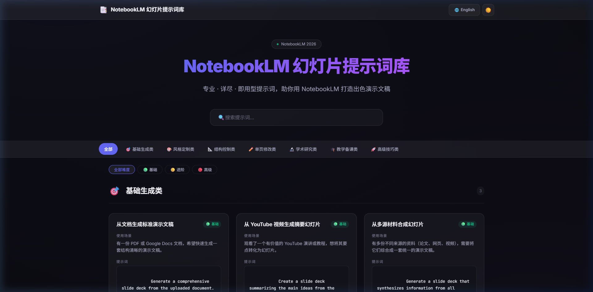
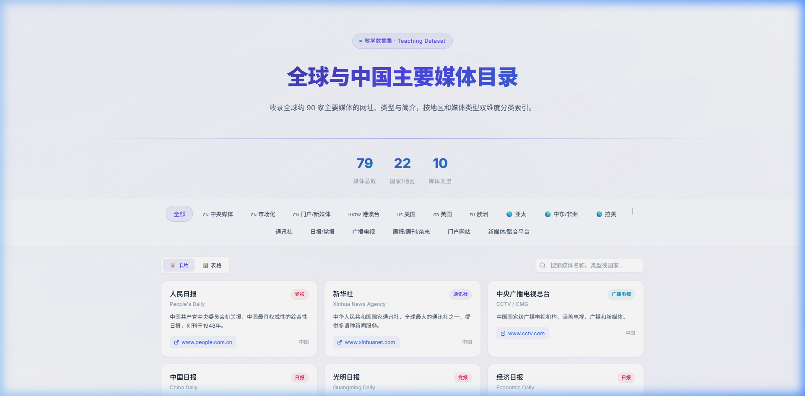
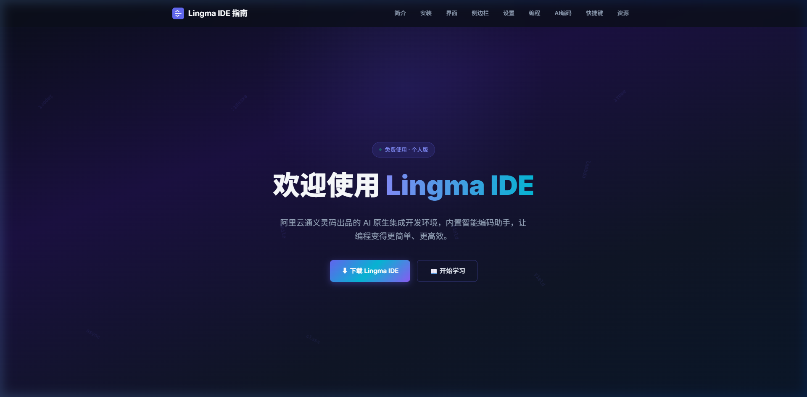

外站暂不可用
NEW · vis.jsPlate I
🧠 课程知识图谱
25个知识点 × 6大模块的交互式知识地图，可按模块筛选、检索跳转，并打开对应周次课文。
打开图谱 →

vis.js · 学术Plate II
📰 新闻传播学知识图谱
交互式学术全景图，涵盖学者名录、历史时间轴、理论关系网络与核心概念检索。
访问平台 →

即用型Plate IV
📝 幻灯片提示词库
专业即用型提示词集合，助力用 NotebookLM 快速生成高质量演示文稿。
访问平台 →

90+ 媒体Plate V
🌐 全球媒体目录
收录约 90 家全球主要媒体机构，按地区与媒体类型双维度索引。
查看目录 →

AI 编程Plate VI
💻 Lingma IDE 入门指南
面向零基础文科生的通义灵码 AI 编程环境教学手册，含 5 种 AI 编码模式。
阅读指南 →